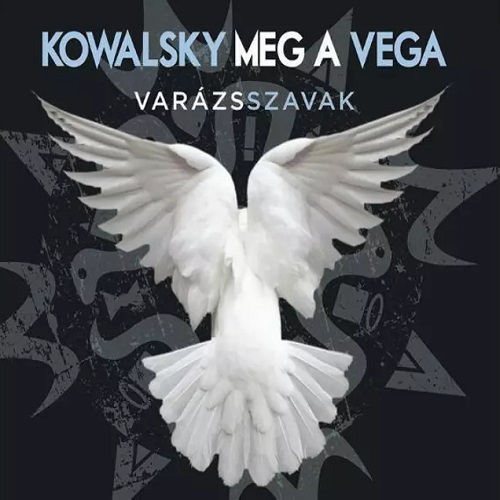

Mit mondjak még?
Hiszek benne
Ez a mi mesénk
Varázsszavak
Lélekszerelő
Csend legyen!
Éjféltől éjfélig
Idővel
Amilyen hülye vagy, én úgy szeretlek
(Daddy's Version)
Nekem elég
(feat. Geszti Péter & Erdélyi Péter)
Az élet az igazi R'n'R
Sírig tart
Játszd újra!